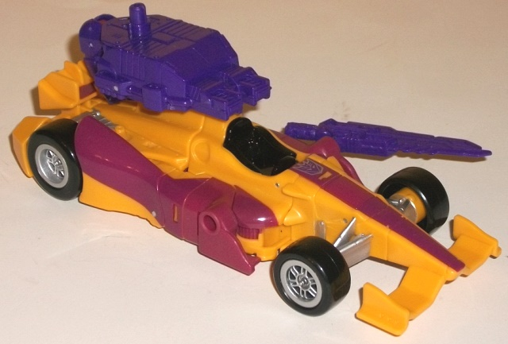
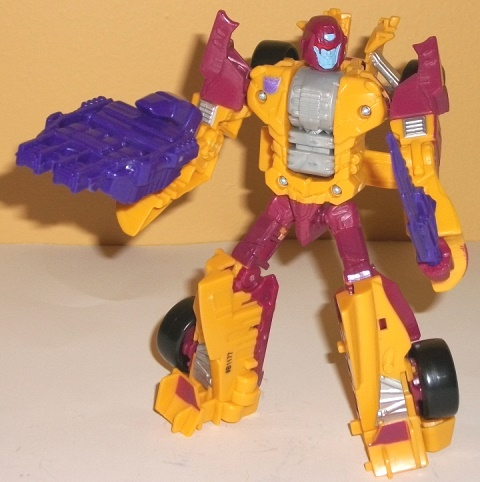
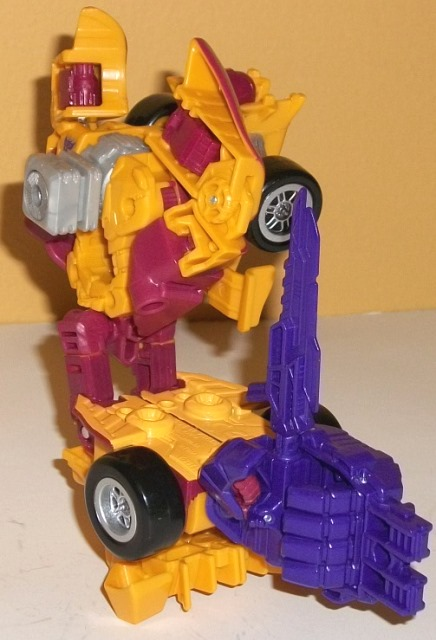
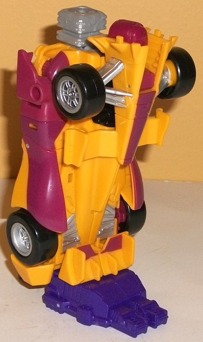

Allegiance
: Decepticon
Size
: Deluxe
Difficulty of Transformation to Robot:
Easy
Difficulty of Transformation to Leg
:
Very Easy
Difficulty of Transformation to Arm
:
Easy
Color Scheme
: Dull orangish yellow,
dull fuchsia, orangish yellow, and some black, silver, royal purple, light
milky gray, light red, glossy fuchsia, and light pastel blue
Rating
: 9.2


Dragstrip's alt mode
is a F1 race car, as it's pretty much always been. This version of Dragstrip,
though based off his G1 version, has only four wheels compared to the original's
six, and is thus a bit different of a kind of F1 race car. By and large,
this mode looks pretty good; there's not even a hint of any robot extras,
and for the most part the toy is pretty proportional. The sole exception
to this is that-- likely due to Dragstrip's transformation-- the spoiler
is pitifully small; it should have been at least about twice as large and/or
long. It looks almost funny, how small it is. On a much lesser note, the
main body of the race car is just a bit TOO close to a rectangular shape;
it should curve inwards a bit more at the sides around where the seat is,
but Dragstrip's pointed shoulders mean the sides stick out just a bit too
far there. For his color scheme, Dragstrip very much apes his G1 version's,
with his primary colors being a dull orangish "cheese" yellow and stripes
of fuchsia along the sides and the center. The fuchsia really goes great
against the orangish yellow, though making it a "purer" (but not bright)
yellow like on the original toy would've helped add to the contrast a bit
more. There's also some silver near the rear, on the "bars" connecting
the tires to the main body, and on the tire hubs, while the tires themselves
and cockpit are black. The black in particular provides some nice contrast;
the silver looks decent enough as a neutral color for the others to work
off of, but there isn't quite enough of it and it doesn't go all that well
with this shade of yellow, in my opinion, even if it doesn't outright clash.
Dragstrip comes with two accessories; a sword, and the standard hand/foot/gun
accessory that all Combiner Wars deluxes come with. What's cool is that
Dragstrip's hand/foot/gun weapon can integrate with the race car mode a
bit, by plugging into a circular peg on the top and then folding down the
thumb of the weapon right in front of the spoiler. Given how the two protrusions
at the front of this accessory look like some sort of energy beam projectors,
it gives Dragstrip some weaponry in this mode. Dragstrip has two 5mm ports
in this mode for storing weapons, one on each side, around where the cockpit
is. The placement of the corresponding peg on the sword-- otherwise a solid
weapon-- is really unfortunate, though; the sword has to be put in at an
odd diagonal angle, which looks off no matter how you cut it.
Dragstrip's robot transformation
is pretty simple, simply involving folding out the arms from the sides,
folding the front section back behind Dragstrip's back, and then sliding
out and folding around the legs at the waist. (Dragstrip is the only Combiner
Wars deluxe to have the old "push and pull" slide mechanism for leg extension,
and not a slightly more complex "open up the lower legs up and fold out
the lower legs on hinges" transformation.) In this mode, Dragstrip appropriately
looks a little lanky, with his chest and upper legs in particular not being
as wide/thick as on most TFs. His arms are even a bit skinny from a front
view, though from a side view they're actually a tad thick. The spoiler
from the race car mode makes for some excellent feet, and the front of
the vehicle mode is nice and secure behind Dragstrip's back, not getting
in the way of any articulation. The mold detailing on Dragstrip was a bit
sparse in vehicle mode-- granted, he's a sleek race car, but even some
areas like the pistons could have stood to be more detailed-- but here
Dragstrip gets noticeably more detailing on his robot bits. There's a bit
of "exhaust pipe" detailing on his lower arms, and plenty of right angles
and "sharp" edges on his main body. His headsculpt is one of the best out
of the entire line-- I love how they took his general G1 look, made it
more round and thus streamlined (as suits a race car), and then make his
visor come down a bit at the eyes, sort of like it's "bleeding"--
hardcore
,
man. If it wasn't for the coloration, I'd swear Dragstrip was a goth 'Con.
The color scheme is largely the same in this mode as in vehicle mode, though
light gray has been added-- yes, it's that ugly shade of the color, but
thankfully it's only used on his combiner peg in his chest. The use of
pastel blue and light red on the head and nowhere else is also a nice touch,
too-- it makes Dragstrip look more individualistic. That said, there's
some fuchsia paint on Dragstrip's upper legs, which is noticeably a shade
or two darker and glossier than his fuchsia plastic, and sticks out a little.
That aside, most of Dragstrip's paint app budget was used for vehicle mode,
so unfortunately his robot mode is a bit bare paint-wise, particularly
at the chest, where some paint to bring out all those lovely details would've
really been something. His arms also only have a little bit of silver on
them, even if the fuchsia breaks up the yellow a bit more effectively there.
For articulation, Dragstrip can move at the neck, shoulders (at two points),
elbows (at two points), inwards at the wrists, rotation at the waist and
movement at the hips (at two points) and knees. Other than a bit more movement
at the knees and/or ankles, he's got pretty much all the articulation you
can reasonably ask for on a deluxe, and he's well-balanced too, so he can
pull off some great poses.


As with pretty much
any Combiner Wars deluxe, Dragstrip's arm mode is a variation on his robot
mode, with the waist forming the separation point between the upper arm
and the lower arm, with the hand accessory plugged into the hole at the
bottom. The upper portion of this mode is a bit weak; I do like how the
front of the race car still plugs in effectively to the back, but his regular
robot arms are in a pretty darned obnoxious position, being sideways and
upside-down as they are. There's a small notch for the upper shoulder to
slide into the bottom of Dragstrip's waist, but it's a minimal connection;
luckily, Dragstrip's arms are solid enough where they tend to hold up in
most cases regardless. Dragstrip's robot head folds into an alcove at the
top and mostly out of the way, though the round back of it is still fairly
obvious, poking up slightly from the top of the race car front section.
The combiner connection peg flips out rather simply from the robot chest.
For the lower arm, Dragstrip's arms peg together, and-- optionally, it
should be added-- you can fold back the race car fin sections to create
a slightly shorter lower arm, which in my opinion looks a bit better; with
the fin sections not folded back, the lower arm looks a bit overly long
and lanky. It should be noted that in this mode and this mode only, it
becomes obvious that Drag Strip's yellow paint (which is not easily visible
in any other mode) doesn't quite match his yellow-orange plastic, being
noticeably a shade or two brighter (I really wish Hasbro had made the paint
colors a bit closer to the plastic colors on this one). For articulation,
in this mode Dragstrip can move at the shoulder (at two points), elbow
(at two or three points, depending on whether the robot knees are facing
forward or not), wrist, thumb (at two points), and at the base of his four
fingers (all moving as one joint).
There's not much to
Dragstrip's leg mode-- it's literally his vehicle mode standing on its
back end, with the same front section of the car & robot head folded
over in front of the knee, the combiner peg rotated up, and the hand/foot
gun accessory plugged into the bottom. As such, there's not much I have
to say about this mode. It's pretty solid, being mostly just his race car
mode, with not obvious extras hanging off like arms of whatnot. (The visible
back of the robot head is still a tad obvious, but again, a very minor
downside.) So, being basically a rectangular vehicle, it makes for a pretty
good leg mode. As with all Combiner Wars deluxe leg configuations, Dragstrip's
foot can rotate, and the knee joint can move at two points.
Combiner Wars Dragstrip
is the most unique of the Stunticon molds, being an F1 race car with a
rather skinnier-than-normal robot mode and a VERY unique, quite evil-looking
headsculpt. Any of his downsides are pretty minimal-- the lack of enough
paint apps in robot mode; the small spoiler in vehicle mode; the obvious
robot arms in combiner arm mode. Overall he's a pretty solid addition to
the Combiner Wars lineup, and my second-favorite Stunticon. Highly recommended.
Decepticon Operational Status Update,
reported by Soundwave:
Nasty and underhanded-- would rather
be scrapped than lose. Prone to overheating, but possesses the greatest
pure speed of any Stunticon. Adopting the alt mode of an advanced concept
Formula One race car gives him a sixth gear the Autobots cannot match,
but leaves him with a slightly fragile vehicle mode. Bottom line: he moves
REALLY fast and breaks REALLY easily. His fierce competitive streak and
unmatched speed make him the ideal "tip of the spear" for the Stunticon
forces. With fellow Stunticons, forms Menasor.
CONCLUSION: Combat approved and endorsed.
HISTORY (extracted from compulsory
biographical download):
Originally created by Megatron as part
of an Earth-based infiltration unit, Decepticon Dragstrip and the Stunticons
are so enamored of their Earth modes they chose to retain them even back
on Cybertron. Forms either an arm or leg of Menasor, the combined form
of the Stunticons.
Review by Beastbot